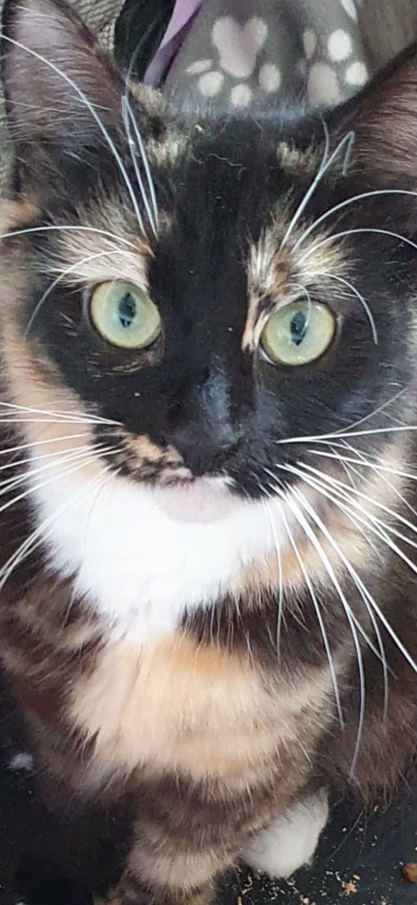
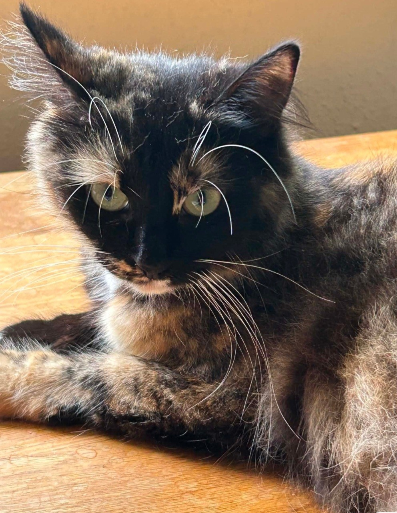
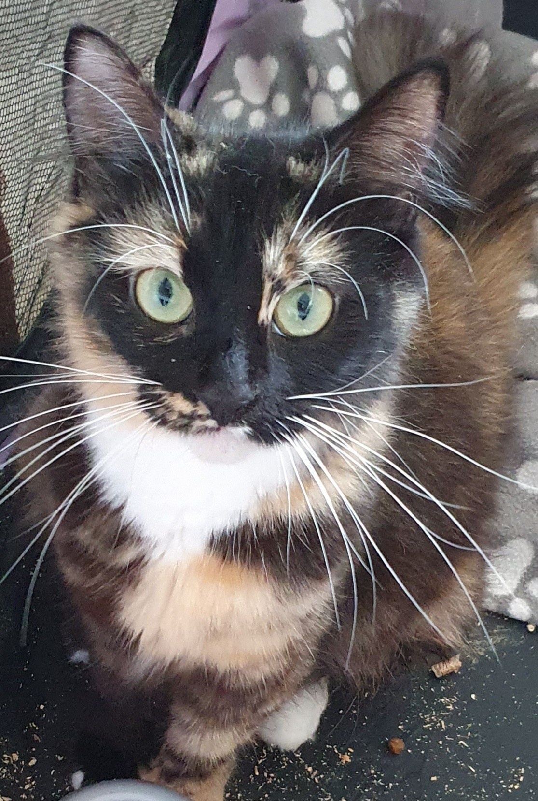
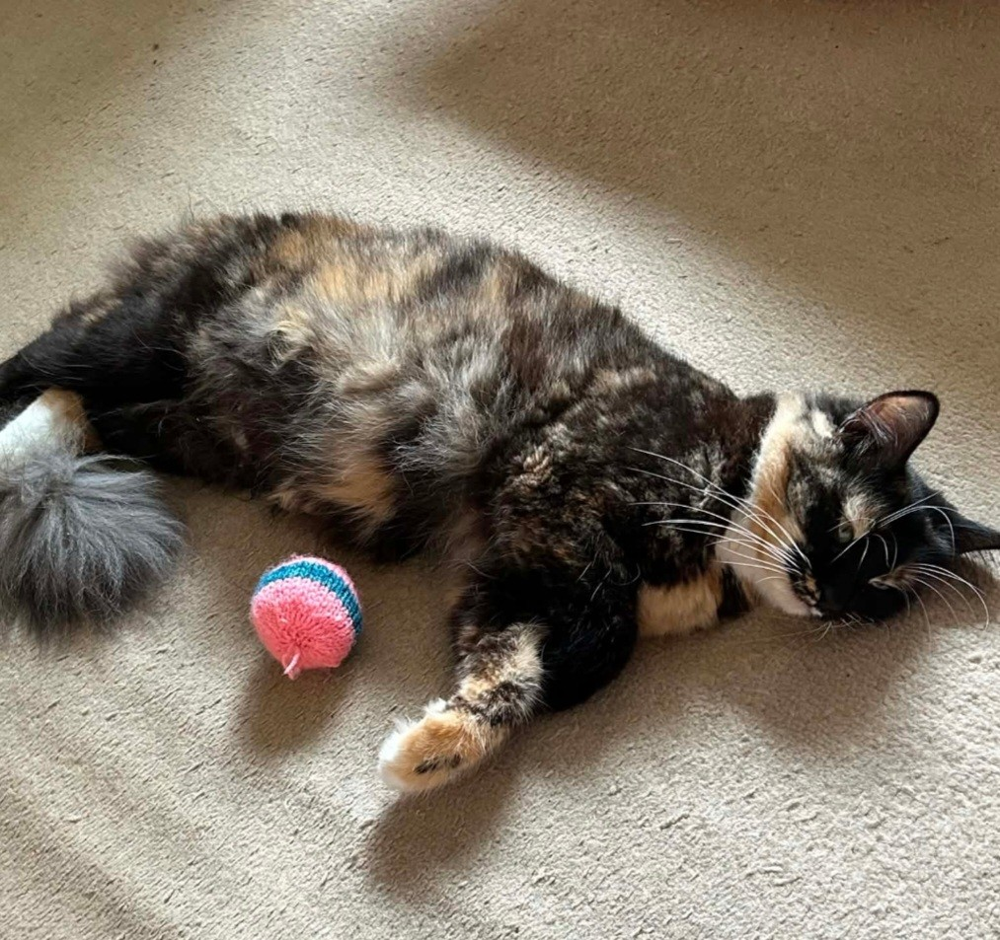

TILLY is still waiting for her forever home
Tilly is a gorgeous loveable totoishell female cat of around 4 to 5 years old. Sadly she has been used to breed litter after litter.
Now her last kitten has been adopted out. It is finally Tilly's turn to get her life back and find her inner kitten.
She is currently being fostered and is an absolute delight, absolutely no problem at all.
She has now been neutered, microchipped, had her first vaccination, which also covers feline leukaemia plus she has received both flea and worm treatments.
Sadly through no fault of her own, she was let down the other week. This beautiful girl does deserve to have a permanent loving home.
If you feel that you could offer Tilly a safe loving home, please click on the link below to complete the CAT ADOPTION FORM.
Please click here to complete the CAT ADOPTION FORM.



Tilly